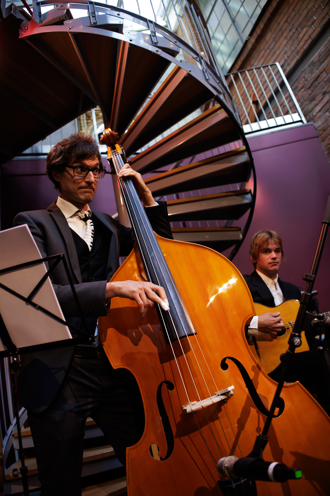

Bandet
Le Style Manouche
Om kärleken till Hot Club de France-stilen och det akustiska hantverket.
I ett skumt hörnbås lutar sig fyra musiker mot en enda mikrofon, precis som deras föregångare gjorde utanför Hôtel Claridge 1934 — inga trummor, inga förstärkare, bara trä, ståltråd och andetag. The Django Quartet spelar akustisk gypsyjazz i samma tradition som Quintette du Hot Club de France, byggd kring samma besättning som Django Reinhardt och Stéphane Grappelli gjorde legendarisk: sologitarr, kompgitarrer som driver la pompe, fiol och kontrabas.
Vi jagar samma rastlösa, cigarettrökiga energi — de halsbrytande löpningarna, de sörjande mollballaderna, glädjen i ett rum som swingar helt utan trumslag. Varje arrangemang byggs på gehör och för hand, så som det var innan förstärkare gjorde det enkelt att vara hög i volym istället för levande.
Oavsett om vi öppnar för en vinbars tisdagspublik eller avslutar en privat soaré tills ljusen brinner ut, tar Kvartetten med sig ljudet från en Montmartre-källarklubb rakt in i rummet — akustiskt, intimt och omisskännligt hett.

 Live på klubben
Live på klubben
Repertoar (urval)
Ur Programmet
En arbetande spellista — vi bygger gärna ett skräddarsytt program för ert evenemang.
Kvällens Set
Franskt, amerikanskt och svenskt i swingtakt- Minor SwingReinhardt & Grappelli
- Sweet Georgia BrownBernie / Pinkard / Casey
- Sakta vi gå genom stanAhlert / Turk, sv. text Wolgers
- Si Tu Vois Ma MèreDjango Reinhardt
- La Vie en RosePiaf / Louiguy
- It Don't Mean a ThingDuke Ellington
- Night and DayCole Porter
- Mr. SandmanThe Chordettes
- La MerCharles Trenet
- I'm Confessin'Dougherty / Reynolds / Neiburg
Lyssna på Kvartetten
Mediegalleri
Ett smakprov från en nyligen spelad kväll — fler inspelningar och liveklipp på gång.



Kommande Spelningar
Turnédatum
Höstens klubbrunda — fler datum tillkommer löpande.
| Datum | Lokal | Ort | Status |
|---|---|---|---|
| 27 september 2026 | Le Hibou Rouge | Stockholm | Biljetter Finns |
| 10 oktober 2026 | Katakomben | Göteborg | Dörrarna 20:00 |
| 24 oktober 2026 | Vinkällaren Marcel | Malmö | Biljetter Finns |
| 7 november 2026 | Gyllene Karusellen | Lund | Slutsålt |
| 21 november 2026 | Sammetsridån | Uppsala | Biljetter Finns |
| 5 december 2026 | Julsoaré — Privat Adress | Visby | Privat Tillställning |
Hör av Er
Kontakt & Bokning
Tillgängliga för bröllop, privata tillställningar, restauranger, vinbarer och festivaler.
Berätta datum, lokal och speltid — så skickar vi ett program som passar.